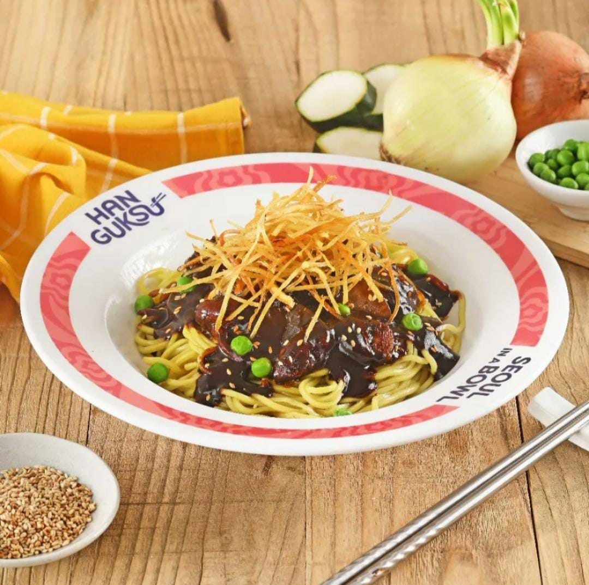
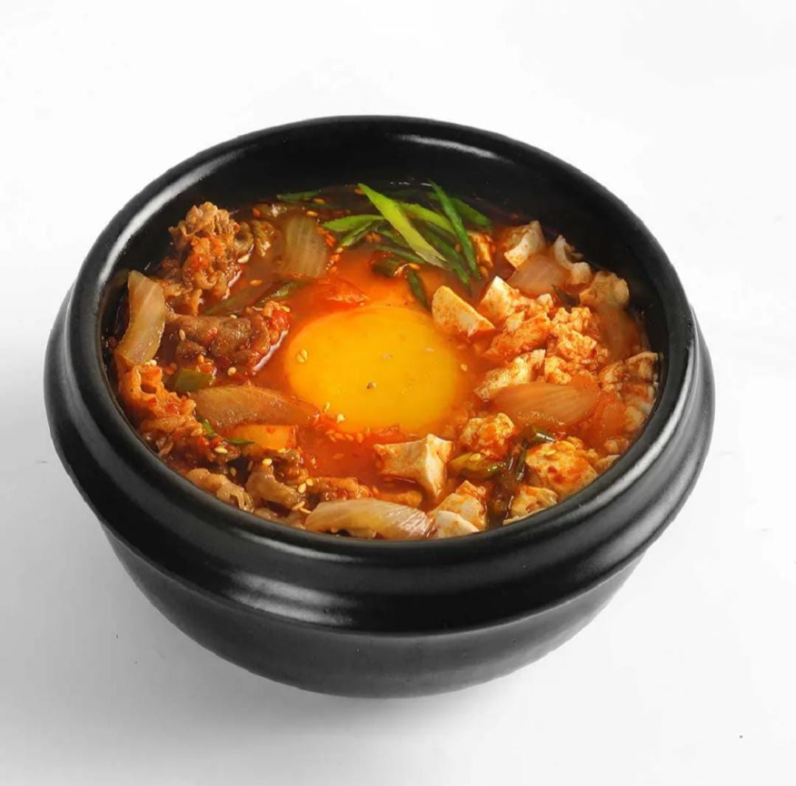

Han Guksu brings you the simple, authentic taste of Korea. Every bowl is made with fresh ingredients and signature seasonings that hit the perfect balance of flavor. It’s a cozy spot to enjoy warm noodles, unwind with friends, or take a quiet break from a busy day.
Temukan menu favorit kamu — mulai dari Seafood Jjamppong yang pedas menggoda, Jjajangmyeon dengan saus hitam khas Korea, hingga Kalguksu yang lembut dan menenangkan. Setiap hidangan dibuat dengan resep otentik dan sentuhan modern agar cocok di lidah semua kalangan.